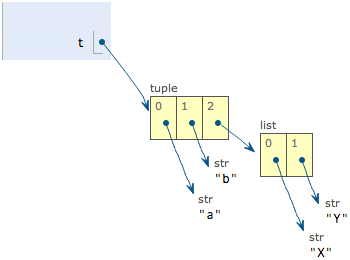

02_03使用list和tuple
list
Python内置的一种数据类型是列表：list。list是一种有序的集合，可以随时添加和删除其中的元素。
比如，列出班里所有同学的名字，就可以用一个list表示：
>>> classmates = ['Michael', 'Bob', 'Tracy']
>>> classmates
['Michael', 'Bob', 'Tracy']
len()
变量classmates就是一个list。用len()函数可以获得list元素的个数：
>>> len(classmates)
3
通过索引访问
用索引来访问list中每一个位置的元素，记得索引是从0开始的：
>>> classmates[0]
'Michael'
>>> classmates[1]
'Bob'
>>> classmates[2]
'Tracy'
>>> classmates[3]
Traceback (most recent call last):
File "<stdin>", line 1, in <module>
IndexError: list index out of range
当索引超出了范围时，Python会报一个IndexError错误，所以，要确保索引不要越界，记得最后一个元素的索引是len(classmates) - 1。
如果要取最后一个元素，除了计算索引位置外，还可以用-1做索引，直接获取最后一个元素：
>>> classmates[-1]
'Tracy'
以此类推，可以获取倒数第2个、倒数第3个：
>>> classmates[-2]
'Bob'
>>> classmates[-3]
'Michael'
>>> classmates[-4]
Traceback (most recent call last):
File "<stdin>", line 1, in <module>
IndexError: list index out of range
当然，倒数第4个就越界了。
append()
list是一个可变的有序表，所以，可以往list中追加元素到末尾：
>>> classmates.append('Adam')
>>> classmates
['Michael', 'Bob', 'Tracy', 'Adam']
insert()
也可以把元素插入到指定的位置(原先位置的及以后 依次后移)，比如索引号为1的位置：
>>> classmates.insert(1, 'Jack')
>>> classmates
['Michael', 'Jack', 'Bob', 'Tracy', 'Adam']
pop()
要删除list末尾的元素，用pop()方法：
>>> classmates.pop()
'Adam'
>>> classmates
['Michael', 'Jack', 'Bob', 'Tracy']
要删除指定位置的元素，用pop(i)方法，其中i是索引位置：
>>> classmates.pop(1)
'Jack'
>>> classmates
['Michael', 'Bob', 'Tracy']
替换
要把某个元素替换成别的元素，可以直接赋值给对应的索引位置：
>>> classmates[1] = 'Sarah'
>>> classmates
['Michael', 'Sarah', 'Tracy']
数据类型
list里面的元素的数据类型也可以不同，比如：
>>> L = ['Apple', 123, True]
list 的嵌套和二维数组
list元素也可以是另一个list，比如：
>>> s = ['python', 'java', ['asp', 'php'], 'scheme']
>>> len(s)
4
要注意s只有4个元素，其中s[2]又是一个list，如果拆开写就更容易理解了：
>>> p = ['asp', 'php']
>>> s = ['python', 'java', p, 'scheme']
要拿到'php'可以写p[1]或者s[2][1]，因此s可以看成是一个二维数组，类似的还有三维、四维……数组，不过很少用到。
空list
如果一个list中一个元素也没有，就是一个空的list，它的长度为0：
>>> L = []
>>> len(L)
0
tuple
另一种有序列表叫元组：tuple。tuple和list非常类似，但是tuple一旦初始化就不能修改，比如同样是列出同学的名字：
>>> classmates = ('Michael', 'Bob', 'Tracy')
现在，classmates这个tuple不能变了，它也没有append()，insert()这样的方法。其他获取元素的方法和list是一样的，你可以正常地使用classmates[0]，classmates[-1]，但不能赋值成另外的元素。
不可变的tuple有什么意义？因为tuple不可变，所以代码更安全。如果可能，能用tuple代替list就尽量用tuple。
tuple的陷阱：当你定义一个tuple时，在定义的时候，tuple的元素就必须被确定下来，比如：
>>> t = (1, 2)
>>> t
(1, 2)
空的tuple
空tuple好像并无实际意义。
如果要定义一个空的tuple，可以写成()：
>>> t = ()
>>> t
()
一个元素的tuple
但是，要定义一个只有1个元素的tuple，如果你这么定义：
>>> t = (1)
>>> t
1
定义的不是tuple，是1这个数！这是因为括号()既可以表示tuple，又可以表示数学公式中的小括号，这就产生了歧义，因此，Python规定，这种情况下，按小括号进行计算，计算结果自然是1。
所以，只有1个元素的tuple定义时必须加一个逗号,，来消除歧义：
>>> t = (1,)
>>> t
(1,)
Python在显示只有1个元素的tuple时，也会加一个逗号,，以免你误解成数学计算意义上的括号。
可变的tuple
最后来看一个“可变的”tuple：
>>> t = ('a', 'b', ['A', 'B'])
>>> t[2][0] = 'X'
>>> t[2][1] = 'Y'
>>> t
('a', 'b', ['X', 'Y'])
这个tuple定义的时候有3个元素，分别是'a'，'b'和一个list。不是说tuple一旦定义后就不可变了吗？怎么后来又变了？
别急，我们先看看定义的时候tuple包含的3个元素：

当我们把list的元素'A'和'B'修改为'X'和'Y'后，tuple变为：

表面上看，tuple的元素确实变了，但其实变的不是tuple的元素，而是list的元素。tuple一开始指向的list并没有改成别的list，所以，tuple所谓的“不变”是说，tuple的每个元素，指向永远不变。即指向'a'，就不能改成指向'b'，指向一个list，就不能改成指向其他对象，但指向的这个list本身是可变的！
理解了“指向不变”后，要创建一个内容也不变的tuple怎么做？那就必须保证tuple的每一个元素本身也不能变。
练习
请用索引取出下面list的指定元素：
L = [
['Apple', 'Google', 'Microsoft'],
['Java', 'Python', 'Ruby', 'PHP'],
['Adam', 'Bart', 'Lisa']
]
# 打印Apple:
print(?)
# 打印Python:
print(?)
# 打印Lisa:
print(?)
参考答案：
#!/usr/bin/env python3
# -*- coding: utf-8 -*-
'''
filename: ch02/03.py
message: notes for liaoxuefeng in learning pyhon 3.7
'''
L = [
['Apple', 'Google', 'Microsoft'],
['Java', 'Python', 'Ruby', 'PHP'],
['Adam', 'Bart', 'Lisa']
]
# 打印Apple:
print(L[0][0])
# 打印Python:
print(L[1][1])
# 打印Lisa:
print(L[2][2])